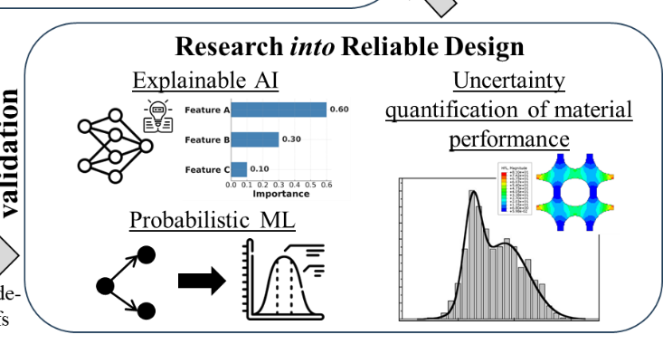

Research Direction 03
Uncertainty-aware reliable design
Quantifying what models know, what they do not know, and how variability affects engineering decisions.

We develop uncertainty-aware methods for materials and mechanical systems whose available data are sparse, noisy, or heterogeneous. Statistical learning and physics-informed models quantify and propagate both aleatoric uncertainty from data and epistemic uncertainty from models, replacing isolated point predictions with calibrated confidence. Out-of-distribution detection identifies unfamiliar conditions, while active learning, adaptive model refinement, and robust optimization use uncertainty to guide new data collection and risk-aware decisions. The goal is to produce transparent, trustworthy predictions and designs that maintain reliable performance under real-world variability.